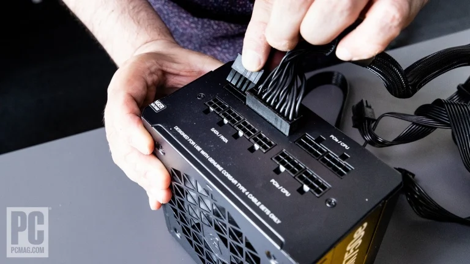

8. Install the Power Supply, and Plug In Its Cabling
To this point, power has been a secondary thought. But now it's time to install the power supply unit (PSU), so this PC can get juiced.
Just as motherboards come in different sizes, your power supply will use one of two PSU form factors. By far the most common is the ATX or PS/2 power supply, whose standard height and width (5.9 by 3.4 inches) conforms to the PSU mounting position of most PC cases. Note that ATX PSUs can, however, be different lengths, accommodated by different cases, so you need to match your case and power supply. Some cases have items that can be removed, such as drive cages, to extend the depth of the PSU mounting area if necessary.
Some smaller PC cases employ a specialized power supply form factor called SFX, a compact design that requires higher power density. SFX PSUs are thus a bit more expensive for the same wattage. You may also encounter SFX-L, an SFX variant that's broadly similar but deeper front to back. Any case that supports SFX-L will support SFX, but not necessarily vice versa.

If you're building an ATX tower or MicroATX system, you're almost certainly using an ATX power supply. These (like SFX supplies) come in three subtypes: fixed-cable, semi-modular, and fully modular. Fixed-cable PSUs have all the cables hardwired in place. When you take one out of the box, it will have a hydra-head of cables sticking out of one end. Whether you use them all or not, they all must get crammed into your case.A semi-modular supply has some fixed cables and some that plug into the end of the PSU via sockets. The fixed ones are cables you'll definitely use. Last, the modular type comes with all of its cables in a pouch; you plug only the ones you need into the end of the PSU box. That makes installation easier and cleaner.
The Corsair RM850 power supply we’re using is fully modular, so the first step is to determine which cables we need to plug into the PSU. You'll want to do this before mounting the power supply, because access to its sockets will be a lot more limited afterward.

The immutable cables you will use are the 24-pin main power connector, one CPU power connector (some boards require two), and one or two PCI Express power leads for your graphics card, assuming you're installing one. Other cable types you may need are Serial ATA power if you're installing any SATA hard drives or other SATA-powered devices. (We will need one here.) Another possibility is a cable of 4-pin Molex connectors, mostly used for legacy devices. We won't need those here.Once you've determined which cables you need, plug them into the back of the power supply. Don't force them, and recognize that the connectors are different on the device end versus the power supply end. You shouldn't be able to plug anything in where it doesn't belong; match the name of the cable to the name on the socket, and never mix and match modular cables from different power supplies. In the case of our Corsair PSU, we've plugged in the 24-pin cable, one CPU power connector, one PCI Express power connector, and one Serial ATA power lead.

You're now ready to mount the supply. In our case, you maneuver the PSU in through the right side of the case, the side opposite where you install the motherboard ...
Some case designs have a backplate, secured by screws, around the rear PSU mounting area. If yours does, remove the plate, screw it onto the back of the PSU, and then guide the whole works through the gap in the back of the case before screwing it into place. In our chassis, we maneuvered the power supply into place and mounted it through the back using the four screws included with the PSU.
As with your radiator, make sure screws are going into screw holes in the PSU enclosure, not any grilles or other openings. Note that the power supply should be oriented so the fan can pull in air from the bottom of the case, as in our example. With a different case, you may need to orient the PSU differently, making sure you're pulling in fresh air from the outside and sending it out the back, next to the main AC power socket and power switch.Routing the PSU cables is your next task. Depending on the PSU, they may be bulky, so take care, take your time, and don't dislodge any of the cables already installed, especially the front-panel headers. Note where these cables exit into the main case interior if you have a transparent case side, since these big cables can look clunky if not routed properly.
Start with the CPU power connector, which in typical tower cases needs to stretch the furthest (assuming your PSU is at the bottom of the case). Here, we stretched it to the top of the case behind the motherboard tray, and looped it through a hole at the top of the case above the motherboard.
In many builds, this is a bit of a stretch, and with some oversize chassis you may need an aftermarket extension cable. We then plugged it into the 4- or 8-pin socket or sockets at the top of the board. Match up the protrusion of the edge of the socket with the clip on the plug, and make sure the plug engages with a solid click. Tug it gently to make sure it's seated.

The same goes for the main 24-pin power connector. It inserts only one way, and if you don't hear a solid click it's not installed properly. With some power supplies, this connector is implemented as a breakaway connector to a 20+4-pin plug that is split up for compatibility with older motherboards. With any modern motherboard, you'll use the full 24 pins and must plug them in at the same time to be sure all are seated properly.
Again, make sure you get a click and then tug gently. This is your stiffest, most ornery cable, so give it some looping radius to keep it from stressing the socket, and make sure it's routed through a nearby cutaway in the motherboard tray.
As for the PCI Express cable or cables, snake them through what you think will be the closest entry point to the trailing edge of your graphics card and leave them there. You may need to reroute them later, but let's put them close to their destination for now.
The same goes for any SATA cables you may have installed. Run them as close as you can to the installation point for any 2.5- or 3.5-inch drives you may install. In our build, we used this opportunity to plug the SATA power connector from the CPU cooler's cable mass into one of the connectors on the SATA power lead...
Okay, you’ve done all you can with your PSU for now. With that in mind, let's move on to platter hard drives and 2.5-inch SSDs.